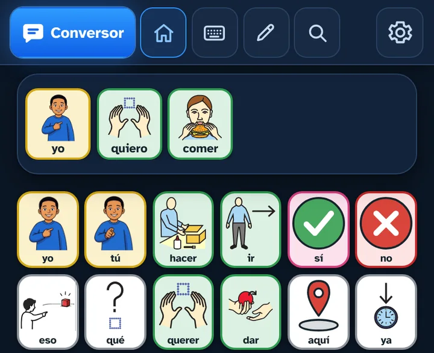

Comunicador
Un tablero de pictogramas organizado en carpetas: comida, personas, sentimientos, lugares, el colegio… Tocas las casillas, la frase se forma arriba y la app la dice en voz alta.
Los verbos se conjugan solos: yo querer comer → yo quiero comer